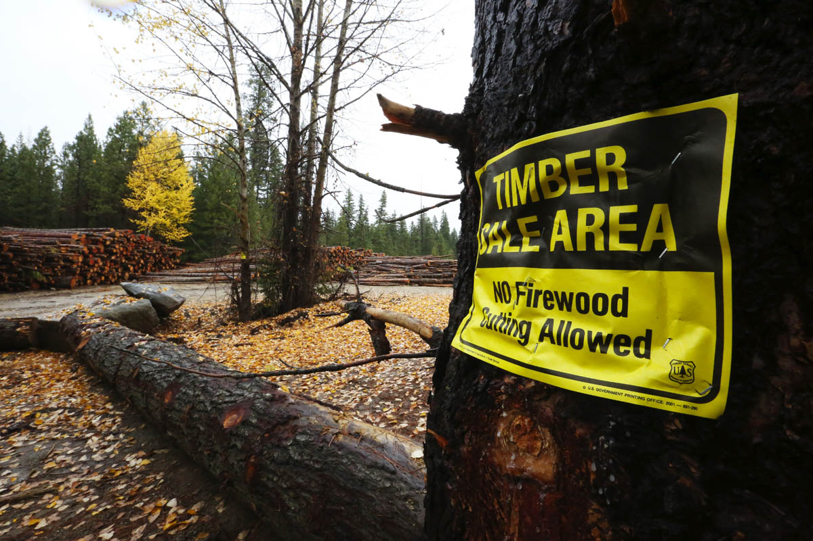
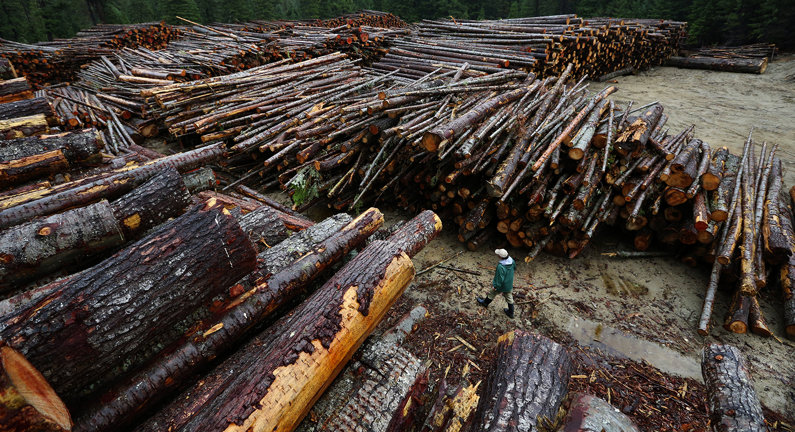

<%= markdown.intro %>

Ken Lambert / The Seattle Times
A pile of timber taken from the cut, near Leavenworth.
<%= markdown.story1 %>
<%= markdown.story2 %>

Ken Lambert / The Seattle Times
Rich Haydon, a former Forest Service employee, looks at the massive pile of cut timber.
<%= markdown.story3 %>
Animal habitats decimated
Due to the emergency status of the cut and the haste in which it was conducted, acres of animal habitat were destroyed, including trees and nesting grounds for the spotted owl. The following tables show the suitable habitat areas before and after the cut, according to studies conducted by the US Fish and Wildlife Service. <% var habitat = { beforeAll: [74.86283844, 21.06170266, 57.09534176, 27.99388487], afterAll: [0, 0, 0, 181.0137677], beforeOwls: [0.919061858, 0.286575332, 4.123612051, 0.839319714], afterOwls: [0, 0, 0, 6.168568955], labels: ["Highly suitable", "Marginal", "Suitable", "Unsuitable"] } %>
Habitat in cut areas, in acres
| Before | After | |
|---|---|---|
| <%= l %> | <%= habitat.beforeAll[i].toFixed(2) %> | <%= habitat.afterAll[i].toFixed(2) %> <% }); %> |
Owl habitat in cut areas, in acres
| Before | After | |
|---|---|---|
| <%= l %> | <%= habitat.beforeOwls[i].toFixed(2) %> | <%= habitat.afterOwls[i].toFixed(2) %> <% }); %> |
<%= markdown.story4 %>

Ken Lambert / The Seattle Times
Photos of the cut near Leavenworth. On the right, a big ponderosa survived fire in the past, but it was no match for loggers. Fire resistant species such as ponderosa were supposed to be protected.
<%= markdown.story5 %>
As a part of the fire planning effort, the government models the likelihood that the fire will spread beyond a certain point using software called FSPro. The map shown displays the bounds of the fire in dark orange, and the fire line is shown in black.
When the initial measurements were taken, the model predicted a high probability that the fire would head south, possibly threatening Leavenworth. The fire line was planned accordingly, and cutting began.
Quickly, however, it became clear that the fire was not likely to spread. The weather was rainy and cool. A new model run on Sept. 5 put the odds of the fire's spread beyond the fire line at less than 1%.
Despite that prediction, workers continued cutting the line. The markers shown here are places where repairs would be needed to correct the environmental damage to fish and owl habitat.
<%= markdown.story6 %>